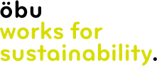
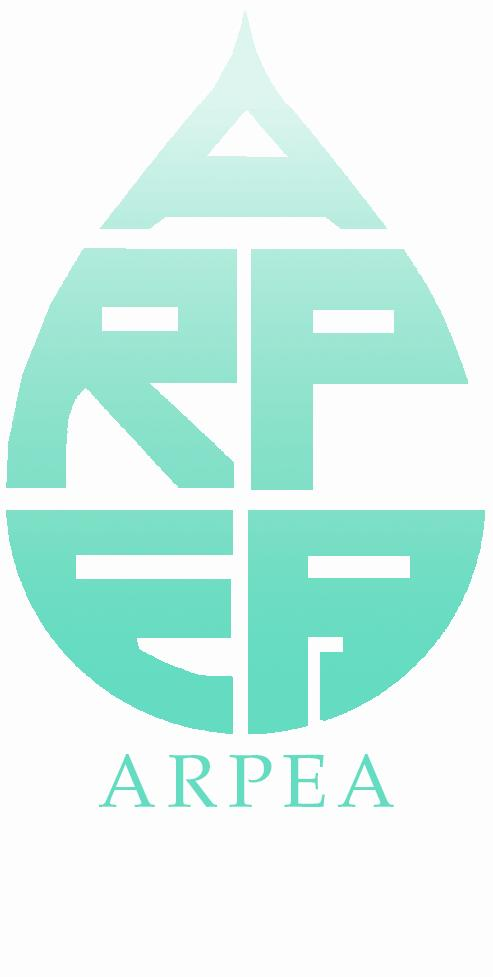

|
|
En partenariat avec |
|
Der Zertifikatslehrgang richtet sich an mittlere und höhere Führungskräfte in Unternehmen und öffentlicher Verwaltung, die Nachhaltige Entwicklung in die Unternehmensführung integrieren und eine Strategie mit einem Massnahmenplan entwickeln möchten, um die Umweltperformance und Corporate Social Responsibility zu verbessern. Der Lehrgang erlaubt den Teilnehmenden,
|
|

- Nachhaltigkeitskriterien und -indikatoren zu entwickeln und in das Managementsystem zu integrieren,
- sowie konkrete Massnahmen im Betrieb oder bei der Entwicklung neuer, umweltfreundlicher Technologien und Produkte in die Tat umzusetzen.
Die Weiterbildung verbindet Theorie mit Managementmethoden und Erfahrungsaustausch. Die begleitenden Workshops erlauben den Teilnehmenden, ein erstes Projekt in ihrem Unternehmen oder ihrer Verwaltungseinheit zu realisieren. Dieses Projekt kann als Grundlage für die Zertifikatsarbeit (mindestens 200 Stunden) dienen.
Ablauf

Stärke und Besonderheit des CAS - die Workshops
Zwei Workshopreihen erlauben den Teilnehmenden
- die Nachhaltigkeitsperformance ihres Unternehmens oder ihrer Verwaltungseinheit zu evaluieren und
- eine vereinfachte Ökobilanz ihres Unternehmens oder ihrer Verwaltungseinheit zu erstellen.
Mit Hilfe der Ergebnisse der Workshops können die Teilnehmenden die prioritären Handlungsfelder und dazugehörigen Massnahmenpläne definieren. Sie Indikatoren bestimmen um die erzielten Verbesserungen zu messen. Die in den Workshops begonnenen Projekte können als Grundlage für die Zertifikatsarbeit dienen.
Die Online-Instrumente der Workshops stehen während des gesamten CAS zur Verfügung.
Mehrwert des CAS für Unternehmen und Teilnehmende
Während der Zertifikatsarbeit arbeiten die Teilnehmenden an einem konkreten Projekt in ihrem Unternehmen oder ihrer Verwaltungseinheit um die Nachhaltigkeitsperformance zu verbessern. Dieses Projekt ist ein echter Mehrwert, da es dem Unternehmen erlaubt, auf einem Markt zu bestehen, der von immer höheren Anforderungen in Bezug auf die Verantwortung gegenüber Umwelt und Stakeholdern entlang der gesamten Wertschöpfungskette gekennzeichnet ist.
Der CAS ermöglicht
- den Aufbau oder die Optimierung eines integrierten Managementsystems "Qualität-Umwelt-Sicherheit-Soziale Verantwortung";
- Ressourcen- und Energieeffizienz zu verbessern, Kosten und Risiken zu senken;
- die Identifizierung von Chancen für neue Produkte und umweltfreundliche Technologien;
- eine Positionierung auf den Märkten von morgen;
- eine höhere Motivation der Mitarbeitendenden durch den Erwerb von neuen beruflichen Kompetenzen.
Zertifikat
Der erfolgreiche Besuch des Lehrgangs wird mit einen Certificate of Advanced Studies CAS bescheinigt (15 ECTS-Punkte). Beim Besuch von Einzelmodulen wird eine Teilnahmebescheinigung ausgestellt.
Der CAS wird von folgenden Organisationen empfohlen:
|
 |
|
 |
Ihre Mitglieder erhalten einen Rabatt von CHF 300.- auf die Teilnahmegebühr.